Diagrammes de l'application SongBook
(Utiliser le nom présenté sous le diagramme dans vos chansons — cliquer sur le diagramme pour mettre son nom dans le presse-papier)
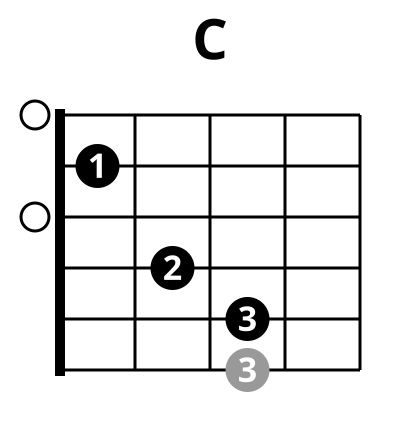
/C-0:
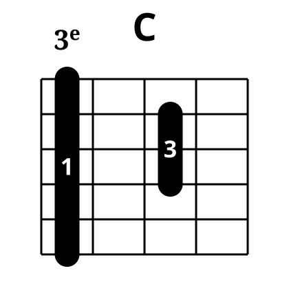
/C-3:
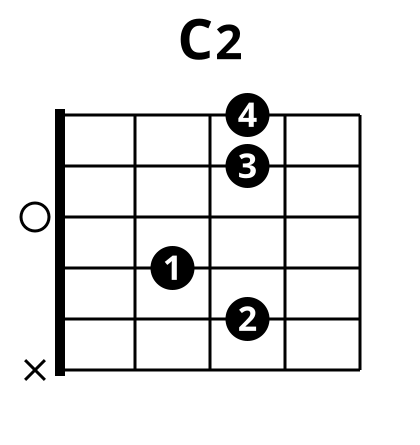
/C2-0:
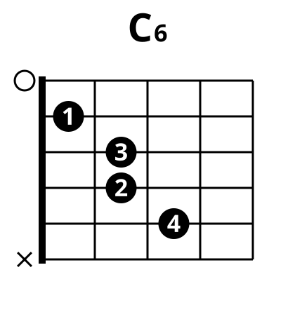
/C6-0:
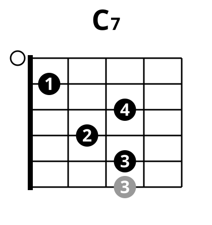
/C7-0:
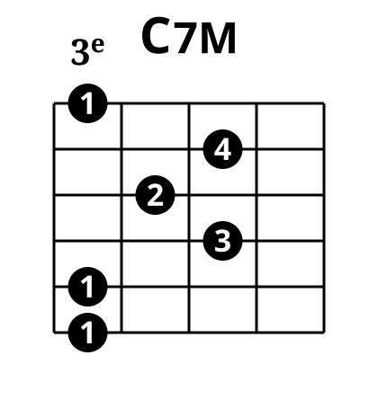
/C7M-3:
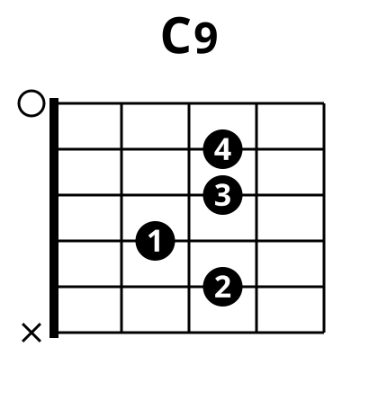
/C9-0:
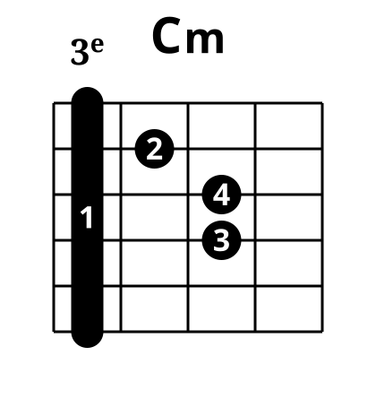
/Cm-3:
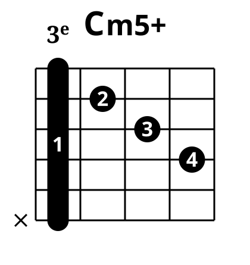
/Cm5+-3:
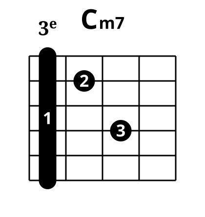
/Cm7-3:
/Cd-4:
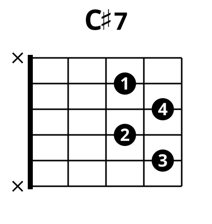
/Cd7-2:
/Cd7-4:
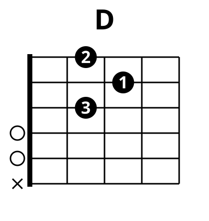
/D-0:
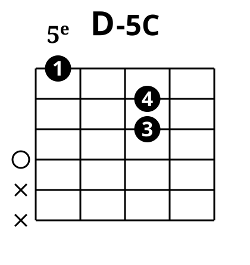
/D-5C:
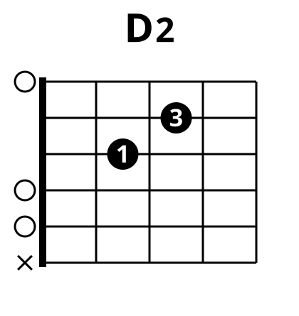
/D2-0:
/D6-7C:
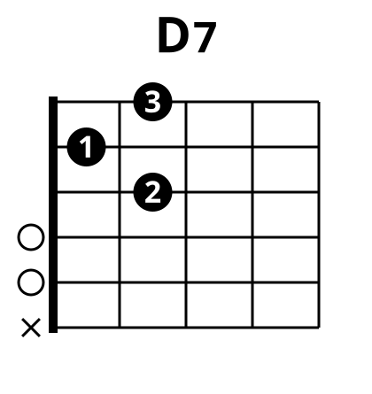
/D7-0:
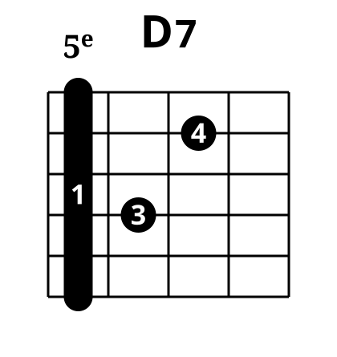
/D7-5:
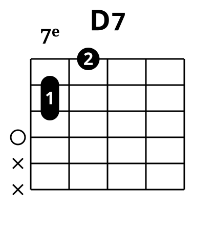
/D7-7C:
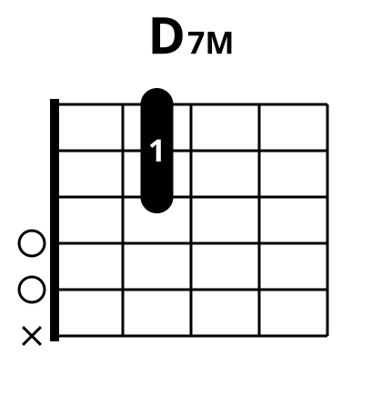
/D7M-0:
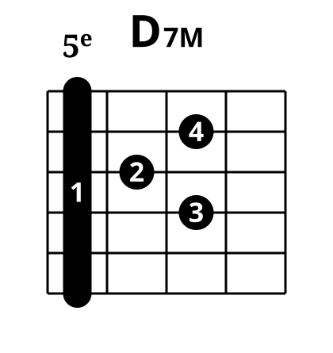
/D7M-5:
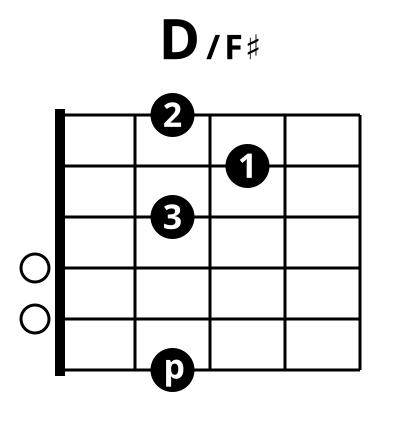
/D[Fd]-0:
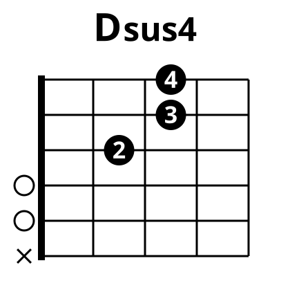
/Dsus4-0:
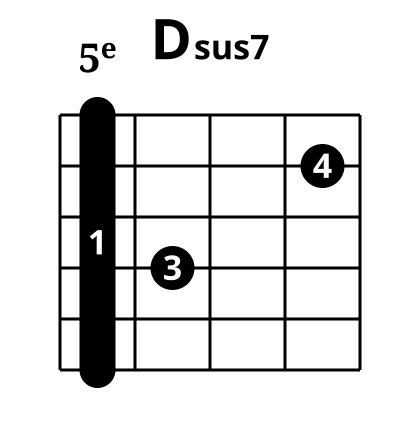
/Dsus7-5:
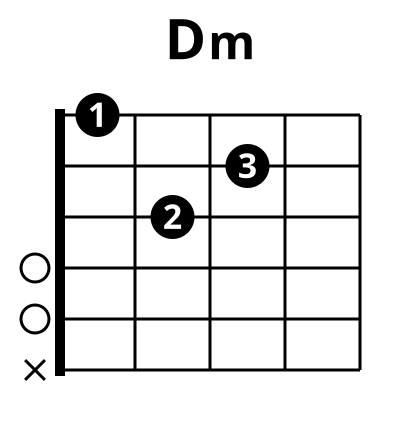
/Dm-0:
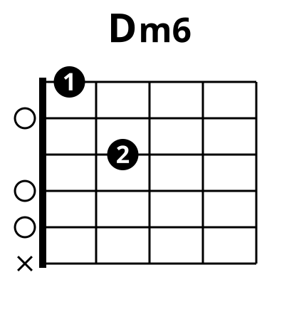
/Dm6-0:
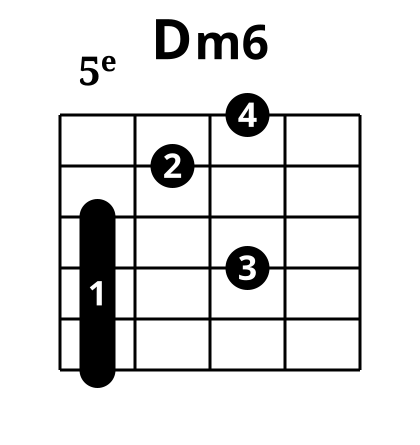
/Dm6-5:
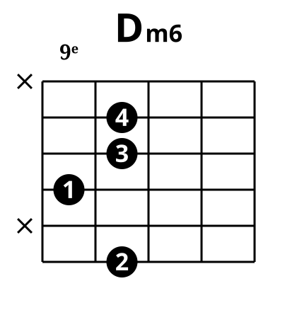
/Dm6-10:
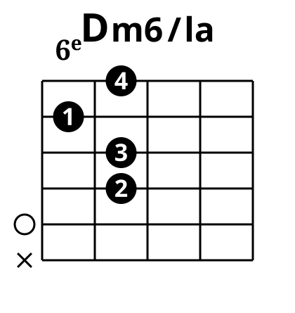
/Dm6[a]-5:
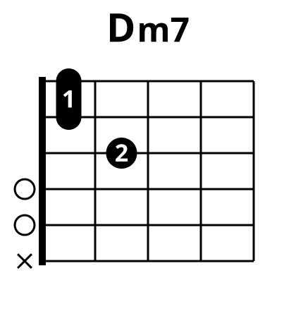
/Dm7-0:
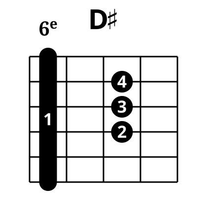
/Dd-6:
/Dd7-6:
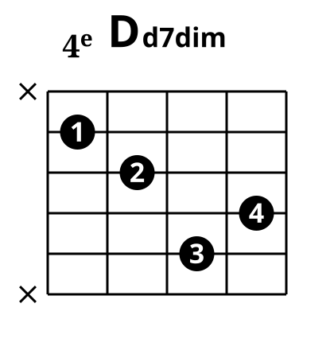
/Dd7dim-6:
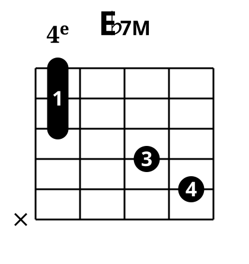
/Eb7M-4:
/Eb7M-6:
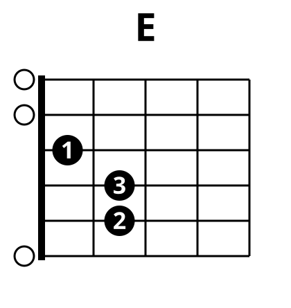
/E-0:
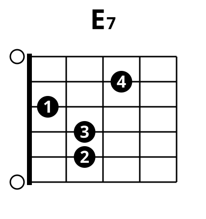
/E7-0:
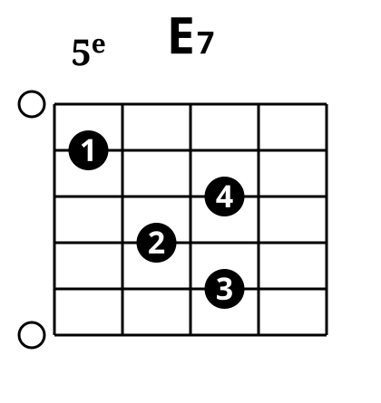
/E7-7:
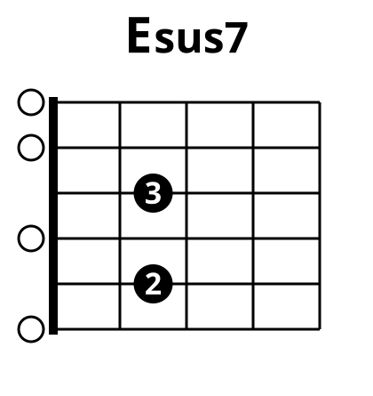
/Esus7-0:
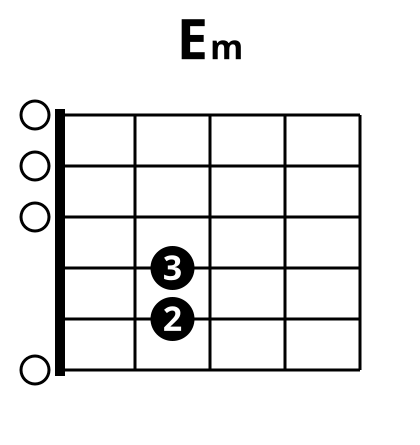
/Em-0:
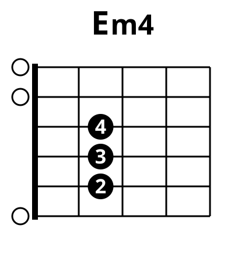
/Em4-0:
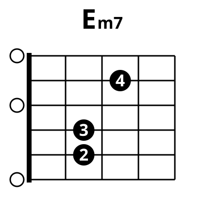
/Em7-0:
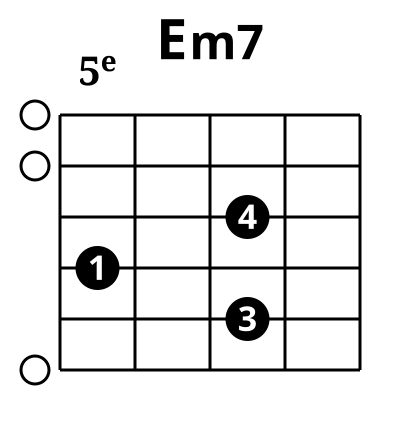
/Em7-7O:
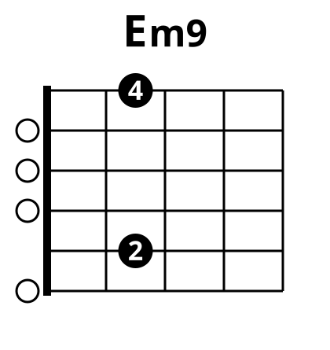
/Em9-0:
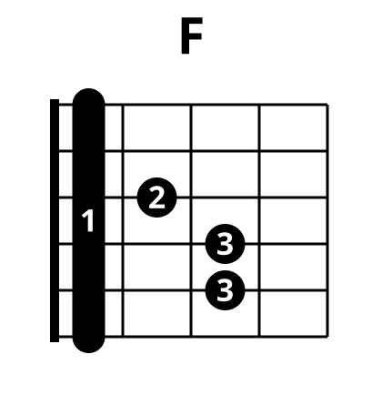
/F-1:
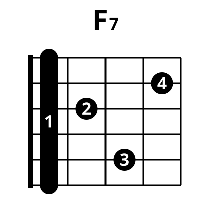
/F7-1:
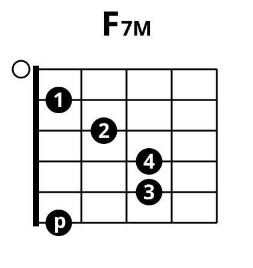
/F7M-1:
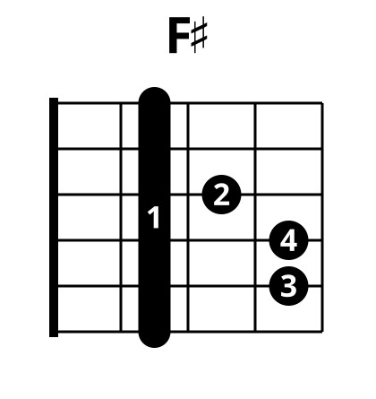
/Fd-2:
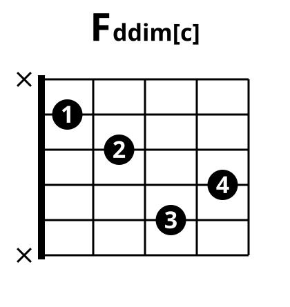
/Fddim[c]-3:
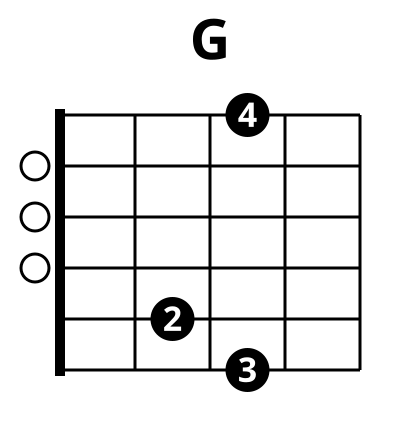
/G-0:
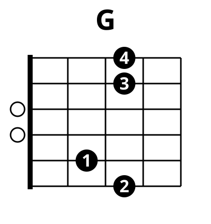
/G-0B:
/G-0C:
/G-3:
/G-10O:
/G2-0C:
/G5+-3:
/G7-0:
/G7M-0:
/Gsus7-3:
/A-0:
/A-5:
/A2-0:
/A7-0:
/A7M-0:
/A9-5:
/A[e]-0:
/Am-0:
/Am2-0:
/Am7-0:
/Am7-5:
/Am9-5:
/Am[fd]-0:
/Am[g]-0:
/Am[gd]-0:
/Bb-1:
/Bb-6:
/Bb13-6:
/Bb6-6:
/Bb7-1:
/Bb7-6:
/Bb7M-1:
/B-2:
/B-7:
/B7-0:
/B7dim[d]-5:
/Bm-2:
/Bm4-0:
/Bm7-0:
/Bm7-2:
/Bm7-7: